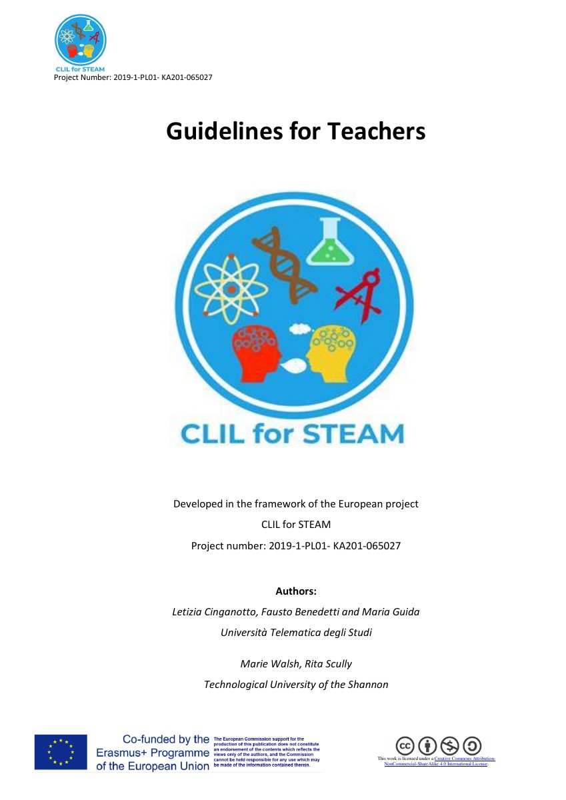

CLIL for STEAM: Guidelines for Teachers
Tích hợp nội dung STEM và ngôn ngữ; dạy học theo vấn đề, dự án và hiện tượng; hỗ trợ ngôn ngữ và ví dụ thiết kế bài học.
Letizia Cinganotto, Fausto Benedetti, Maria Guida, Marie Walsh and Rita Scully CLIL for STEAM project PDF · 178 pages · English · 2.97 MB Source: CLIL for STEAM · Original PDF, unchanged. License: CC BY-NC-SA 4.0